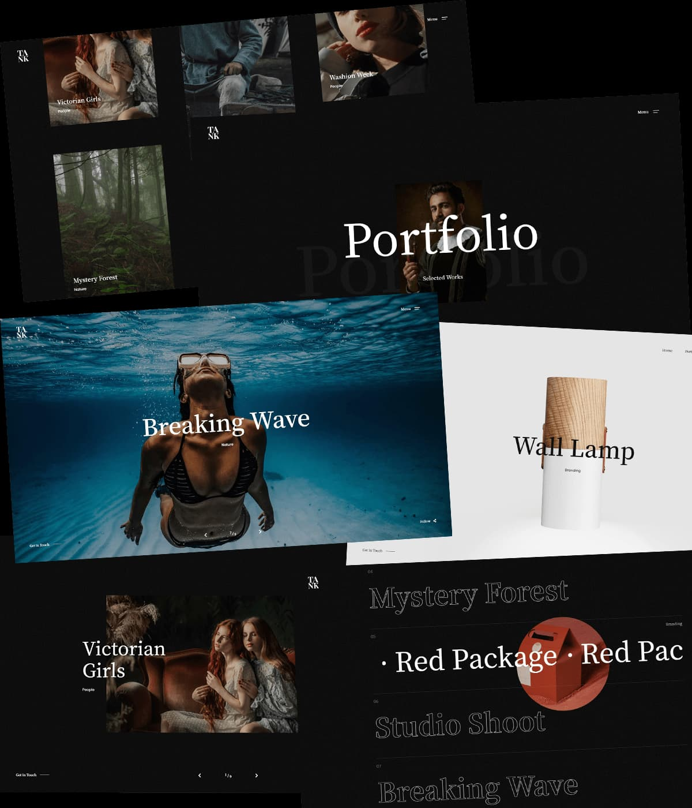

Tank
Website
Tank is a powerful and creative Portfolio Showcase HTML Website Template. Designed and handcrafted with care to highlight your creativity and promote your services in a unique way.
Made with
Explore Demos
Stylish & Flexible
Layouts
Landing Page
Pages
Classic List
Portfolio
List Overlay
Portfolio
Compact List
Portfolio
Interactive List
Portfolio
Interactive Compact List
Portfolio
Creative Grid v.1
Portfolio
Creative Grid v.2
Portfolio
Grid Modern
Portfolio
Classic Grid
Portfolio
Portrait Mode
Portfolio
One Column
Portfolio
Fullscreen Slider
Portfolio
Carousel Overlay
Portfolio
Carousel Center
Portfolio
Blog - Compact List
Blog
Blog - Classic List
Blog
Blog - Post
Blog
Shop - Classic
Shop
Shop - Product Page
Shop
Shop - Shopping Cart
Shop
Shop - Checkout
Shop
Shop - Order Details
Shop
Shop - Wishlist
Shop
About Us
Pages
About Me
Pages
Contact Page
Pages
Dummy Page
Pages
404 Error
Pages
Classic Menu
Elements
Header Search
Elements
Buttons
Elements
Forms
Elements
Typography
Elements
Tabs
Elements
Table
Elements
Finest User Experience
Key Features
-
Flexible
Layouts -
Responsive
Design -
Well Commented
Code -
Shop
Included -
GSAP
Animations -
Smooth Page
Transitions -
Smooth
Scrolling -
Mouse Tracking
Effect -
Magnetic
Cursor -
Working
Contact Form -
Parallax
Effects -
Reliable
Support
...and much more